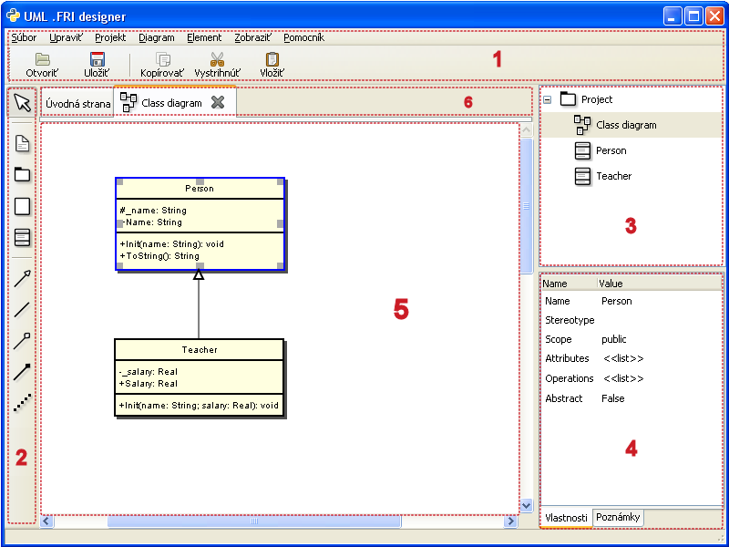

Užívateľské rozhranie
Grafické rozhranie aplikácie (GUI) je rozdelené do niekoľkých častí:
V hornej časti [1] sa nachádza hlavné menu s najpoužívanejšími operáciami rozdelenými do logických skupín.
Vľavo [2] je umiestnený panel nástrojov, pomocou ktorého sa vytvárajú diagramy.
Vpravo je strom projektu [3] a vlastnosti označeného prvku [4].
V strede [5] sa nachádza pracovná oblasť, nad ktorou je oblasť pre prepínanie tabov [6].
